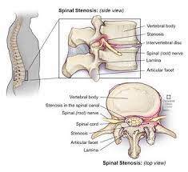

Spinal stenosis

SYMPTOMS:
Symptoms of lower back (lumbar) spinal stenosis include:
- Pain in the lower back. Pain is sometimes described as dull ache or tenderness to electric-like or burning sensation. Pain can come and go.
-
Sciatica. This is pain that begins in the buttocks and extends down the leg and may continue into your foot.
-
A heavy feeling in the legs, which may lead to cramping in one or both legs.
-
Numbness or tingling (“pins and needles”) in the buttocks, leg or foot.
-
Weakness in the leg or foot (as the stenosis worsens).
-
Pain that worsens when standing for long periods of time, walking or walking downhill.
-
Pain that lessens when leaning, bending slightly forward, walking uphill or sitting.
-
Loss of bladder or bowel control (in severe cases).
Symptoms of neck (cervical) spinal stenosis include:
-
Neck pain.
-
Numbness or tingling in the arm, hand, leg or foot. (Symptoms can be felt anywhere below the point of the nerve compression.)
-
Weakness or clumsiness in the arm, hand, leg or foot.
-
Problems with balance.
-
Loss of function in hands, like having problems writing or buttoning shirts.
-
Loss of bladder or bowel control (in severe cases).
CAUSES
The causes of spinal stenosis include:
-
Bone overgrowth/arthritic spurs: Osteoarthritis is the “wear and tear” condition that breaks down cartilage in your joints, including your spine. Cartilage is the protective covering of joints. As cartilage wears away, the bones begin to rub against each other. Your body responds by growing new bone. Bone spurs, or an overgrowth of bone, commonly occurs. Bone spurs on the vertebrae extend into the spinal canal, narrowing the space and pinching nerves in the spine. Paget’s disease of the bone also can also cause on overgrowth of bone in the spine, compressing the nerves.
-
Bulging disks/herniated disk: Between each vertebrae is a flat, round cushioning pad (vertebral disk) that acts as shock absorbers along the spine. Age-related drying out and flattening of vertebral disks and cracking in the outer edge of the disks cause the gel-like center of these disks to break through a weak or torn outer layer. The bulging disk then press on the nerves near the disk.
DIAGNOSIS
You will have imaging tests to examine your spine and determine the exact location, type and extent of the problem. Imaging studies may include:
- X-rays: X-rays use a small amount of radiation and can show changes in bone structure, such as loss of disk height and development of bone spurs that are narrowing the space in the spine.
-
MRI: Magnetic resonance imaging (MRI) uses radio waves and a powerful magnet to create cross-sectional images of the spine. MRI images provide detailed images of the nerves, disks, spinal cord and presence of any tumors.
-
CT or CT myelogram: A computed tomography (CT) scan is a combination of X-rays that creates cross-sectional images of the spine. A CT myelogram adds a contrast dye to more clearly see the spinal cord and nerves.
TREATMENTS
Self-help remedies include:
-
Apply heat: Heat usually is the better choice for pain due to osteoarthritis. Heat increases blood flow, which relaxes muscles and relieves aching joints. Be careful when using heat – don’t set the settings too high so you don’t get burned.
-
Apply cold: If heat isn’t easing your symptoms, try ice (an ice pack, frozen gel pack, or frozen bag of peas or corn). Typically ice is applied 20 minutes on and 20 minutes off. Ice reduces swelling, tenderness and inflammation.
-
Exercise: Check with your healthcare provider first, but exercise is helpful in relieving pain, strengthening muscles to support your spine and improving your flexibility and balance.